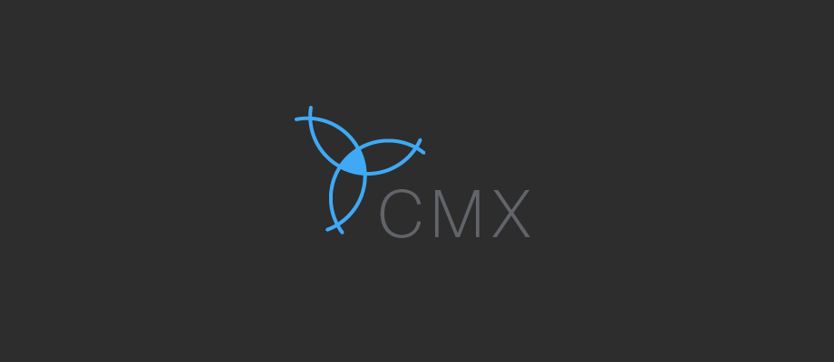
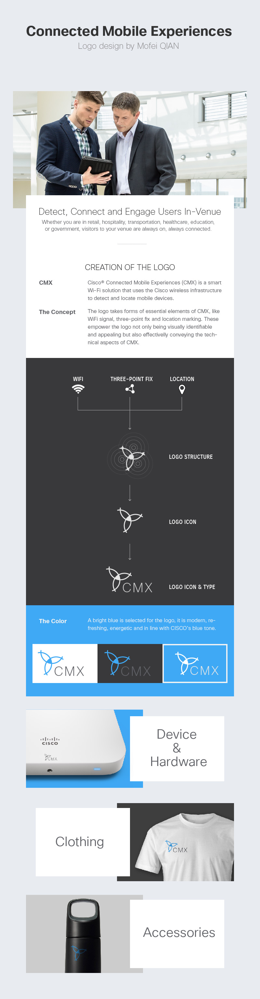

logo design for CMX
BRANDING
Cisco Connected Mobile Experience (CMX) was a technology that was used by GLANCE to provide indoor locations of a variety of devices. In order to be aligned with the visual style of project GLANCE, I took the initiative to design the CMX logo to broadcast its functionality through our app. I don’t think this logo has been used anywhere outside of our project, but I still love undergoing the design process while creating it.

Back To All Works